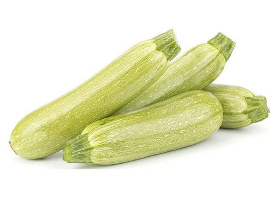

Produzione 2019
Zucchine

Coltivare in terreno molto ricco di materia organica
- Varietà: zucchina chiara di Faenza
- Periodo di semina: Marzo / Aprile
- Primo raccolto: fine Aprile
- Ultimo raccolto: fine Luglio
- Raccolto
| Dimensioni |
Quantità |
| Piccole (10cm) |
16 |
| Medie (16cm) |
26 |
| Grandi (>16cm) |
51 |
|
51 |
-->Compra semi qui<--
Piselli

American Wonder: Varietà media precoce come ciclo culturale
Consigli
-
Piantare in semenzaio riscaldato
è importante:
- Acquistare vasetti biodegradabili
- Mantenere rialzato il semnzaio
- non usare il coperchio del semenzaio
- non mettere il semnzaio vicino al termosifone
- Fissare i sostegni nel terreno non appena le piantine raggiungono i 10 cm
- Acquistare una rete con spazi di non piu di 10cm per garantire sostegni adeguati
-->Compra semi qui<--